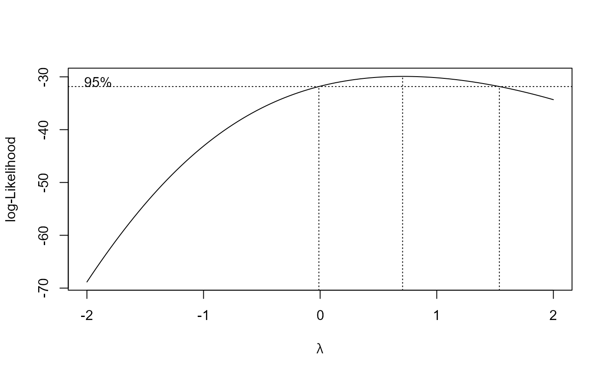

Test data from a 21 day fish test
O.mykiss.RdTest data from a 21 day fish test following the guidelines OECD GL204, using the test organism Rainbow trout Oncorhynchus mykiss.
Usage
data(O.mykiss)Format
A data frame with 70 observations on the following 2 variables.
conca numeric vector of concentrations (mg/l)
weighta numeric vector of wet weights (g)
Source
Organisation for Economic Co-operation and Development (OECD) (2006) CURRENT APPROACHES IN THE STATISTICAL ANALYSIS OF ECOTOXICITY DATA: A GUIDANCE TO APPLICATION - ANNEXES, Paris (p. 65).
References
Organisation for Economic Co-operation and Development (OECD) (2006) CURRENT APPROACHES IN THE STATISTICAL ANALYSIS OF ECOTOXICITY DATA: A GUIDANCE TO APPLICATION - ANNEXES, Paris (pp. 80–85).
Examples
library(drc)
head(O.mykiss)
#> conc weight
#> 1 0 2.8
#> 2 0 3.0
#> 3 0 2.7
#> 4 0 3.9
#> 5 0 3.1
#> 6 0 1.8
## Fitting exponential model
O.mykiss.m1 <- drm(weight ~ conc, data = O.mykiss, fct = EXD.2(), na.action = na.omit)
modelFit(O.mykiss.m1)
#> Lack-of-fit test
#>
#> ModelDf RSS Df F value p value
#> ANOVA 54 17.620
#> DRC model 59 18.492 5 0.5351 0.7488
summary(O.mykiss.m1)
#>
#> Model fitted: Exponential decay with lower limit at 0 (2 parms)
#>
#> Parameter estimates:
#>
#> Estimate Std. Error t-value p-value
#> d:(Intercept) 2.846794 0.092526 30.7674 < 2.2e-16 ***
#> e:(Intercept) 111.738614 33.196876 3.3659 0.001347 **
#> ---
#> Signif. codes: 0 '***' 0.001 '**' 0.01 '*' 0.05 '.' 0.1 ' ' 1
#>
#> Residual standard error:
#>
#> 0.5598508 (59 degrees of freedom)
## Fitting same model with transform-both-sides approach
O.mykiss.m2 <- boxcox(O.mykiss.m1 , method = "anova")

summary(O.mykiss.m2)
#>
#> Model fitted: Exponential decay with lower limit at 0 (2 parms)
#>
#> Parameter estimates:
#>
#> Estimate Std. Error t-value p-value
#> d:(Intercept) 2.841793 0.094431 30.0937 < 2.2e-16 ***
#> e:(Intercept) 104.115039 28.024151 3.7152 0.000453 ***
#> ---
#> Signif. codes: 0 '***' 0.001 '**' 0.01 '*' 0.05 '.' 0.1 ' ' 1
#>
#> Residual standard error:
#>
#> 0.4246342 (59 degrees of freedom)
#>
#> Non-normality/heterogeneity adjustment through Box-Cox transformation
#>
#> Estimated lambda: 0.707
#> Confidence interval for lambda: [-0.0109, 1.5368]
#>
# no need for a transformation
## Plotting the fit
plot(O.mykiss.m1, type = "all", xlim = c(0, 500), ylim = c(0,4),
xlab = "Concentration (mg/l)", ylab = "Weight (g)", broken = TRUE)